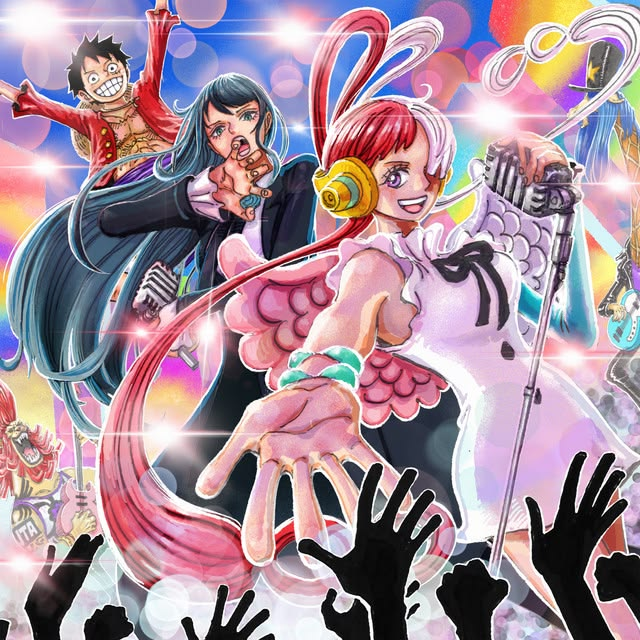
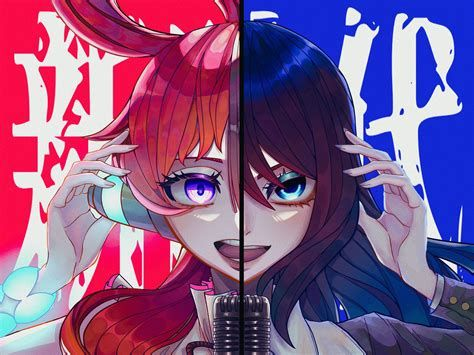
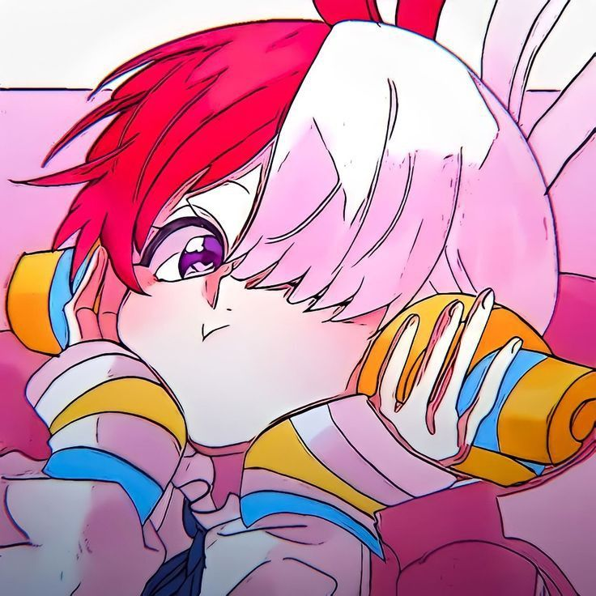

💠La Sombra que Canta💠 |
|---|
👥Alianzas de Élite: Colaboraciones y Proyectos Especiales👥
La carrera de Ado se caracteriza por una curaduría impecable de colaboraciones. No solo presta su voz, sino que transforma cada proyecto en una pieza única de arte sonoro, trabajando con los mejores productores y franquicias del mundo.
_/El fenómeno "One Piece Film: Red"\_

Su colaboración más masiva hasta la fecha fue con la legendaria franquicia de anime One Piece. Ado prestó su voz a la protagonista Uta, interpretando un álbum completo producido por siete de los mejores artistas de Japón. Este proyecto rompió récords históricos y posicionó el tema "New Genesis" como un himno global.

One Piece Film: Red no es solo la decimoquinta película de la franquicia, sino un evento musical y cinematográfico que rompió récords históricos desde su estreno en 2022.

Lista de canciones principales (Álbum de Ado):
-ADO X IMAGINE DRAGONS-
En un movimiento que sorprendió a la industria, Ado colaboró con la banda estadounidense Imagine Dragons en una nueva canción llamada "Take Me to the Beach". Esta colaboración no solo fusionó estilos musicales, sino que también unió a fanáticos de ambos artistas, creando un fenómeno global.

"Take Me to the Beach" es una de las canciones más frescas y vibrantes de Ado, lanzada como parte de su segundo álbum de estudio, "Zanmu" (2024). Esta pista destaca por alejarse de su tono oscuro habitual para abrazar un estilo mucho más relajado y veraniego.
🎤 Otras Colaboraciones Destacadas🎤
1. "Readymade"
Colaboración con el productor DECO*27, conocido por sus éxitos en la escena Vocaloid. La canción fusiona el estilo único de Ado con la producción de DECO*27, creando un hit que ha sido aclamado por fans y críticos.
2. "Gira Gira"
Una colaboración con el productor Syudou, que destaca por su ritmo pegajoso y la voz distintiva de Ado. La canción se convirtió en un éxito viral, consolidando aún más su posición en la industria.
3. "Kura Kura"
Una colaboración con el anime Spy x Family.Protagonizando el opening de este anime. El proyecto destacó por su enfoque innovador y la integración de elementos de la cultura pop.
4. "Kokoro to Karada"
Colaboración con el productor Kanaria, que combina elementos de pop y electrónica para crear una experiencia auditiva única. La canción ha sido muy popular entre los fans de Ado.